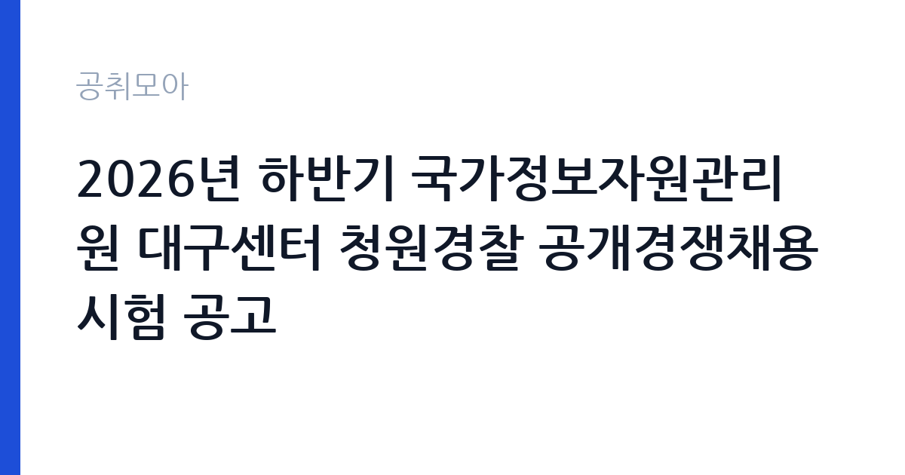

[국가기관] 2026년 하반기 국가정보자원관리원 대구센터 청원경찰 공개경쟁채용시험 공고
행정안전부 국가정보자원관리원 대구센터 · 대구 · 마감 2026-11-05 (D-7) · 출처 나라일터

한눈에 보는 모집 조건
| 기관 | 행정안전부 국가정보자원관리원 대구센터 |
|---|---|
| 공고명 | 2026년 하반기 국가정보자원관리원 대구센터 청원경찰 공개경쟁채용시험 공고 |
| 고용형태 | 정규직 |
| 근무지 | 대구 |
| 게시일 | 2026-10-29 |
| 마감일 | 2026-11-05 (D-7) |
지원자격, 이렇게 읽으세요
- 청원경찰 1명
- 접수 ~2026-11-05 마감
- 세부 조건은 원문 공고문 확인
정규직 채용은 기간의 정함이 없는 근로계약을 전제로 합니다. 수습 기간을 두고 평가한 뒤 정규직으로 확정하는 절차가 일반적이며 기관의 인사 규정과 임금 체계를 적용받습니다. 이번 공고는 행정안전부 국가정보자원관리원 대구센터에서 직접 진행하는 자체 전형으로, 응시자격과 제출서류는 공고문에 항목별로 제시됩니다. 청원경찰은 청원경찰법이 정한 자격 요건을 따르므로 일반 공무직과 확인 항목이 다릅니다. 연령 기준과 신체 조건, 결격사유가 법령에 정해져 있고, 채용 시 신체검사와 신원조회를 거칩니다. 병역 관계와 범죄 이력, 자격 정지 여부가 모두 확인 대상입니다. 공개경쟁이지만 일부 기관은 보훈 대상자나 장애인을 우선 선발하는 제한경쟁으로 운영합니다. 근무지가 데이터센터나 청사라 보안 서약과 비밀 유지 의무가 함께 부과됩니다. 서류는 접수 마감 이후 보완이 되지 않으므로 자격 요건과 증빙 서류를 마감 전에 모두 갖춰야 합니다. 공고문에 명시된 우대 사항은 해당 여부를 확인해 증빙을 첨부해야 가점이 반영됩니다. 자격 취득 예정자는 채용 공고의 예정자 허용 조항을 먼저 확인해야 합니다. 조항이 없으면 지원 자체가 반려될 수 있습니다.
이 공고의 포인트
이 공고의 첫 번째 포인트는 고용 형태입니다. 수습 기간 평가를 통과하면 기간의 정함이 없는 신분이 되어 고용이 안정됩니다. 두 번째는 업무 범위가 명확하다는 점입니다. 청원경찰 직무로 채용되므로 배치 이후 담당 업무가 크게 흔들리지 않습니다. 세 번째는 근무지입니다. 대구 지역 근무로 수도권 공고에 비해 지원자 분포가 넓지 않아 상대적으로 경쟁이 분산되는 경우가 있습니다. 공고가 올라온 지 얼마 되지 않아 아직 지원자 수가 많지 않을 가능성이 있습니다. 다만 선발 인원이 1명으로 많지 않아 자격을 갖춘 지원자가 몰리면 경쟁률이 높아질 수 있습니다.
전형은 어떻게 진행되나
채용 절차는 공고문에 안내된 순서대로 진행되며, 서류 접수 마감 후에는 추가 접수나 서류 보완이 이뤄지지 않는 것이 원칙입니다. 서류심사에서는 응시자격과 제출서류의 형식 요건을 기계적으로 확인하므로, 경력 증명서의 기간과 직무 내용이 공고의 요건과 정확히 맞아야 합니다. 면접은 지원자 수에 따라 집단면접과 개별면접으로 나뉘고, 직무 관련 질문과 상황 대응 질문이 함께 나옵니다. 합격자 발표는 개별 통보 또는 홈페이지 게시로 이뤄지며 이후 임용 절차가 진행됩니다. 경력 증명서에 직무 내용이 적혀 있지 않으면 인정받지 못할 수 있으므로 상세 기재를 요청하십시오.
원문에서 확인한 전형 방식
행정안전부 국가정보자원관리원 대구센터 공고 제2026-1373호 국가정보자원관리원 대구센터 청원경찰 공개경쟁채용시험을 붙임과 같이 공고하오니 많은 응시 바랍니다. 2026. 10. 29. 국가정보자원관리원 대구센터장
이런 분께 추천해요
- 청원경찰법상 결격사유가 없는 분
- 교대·야간 근무를 지속할 수 있는 체력을 갖춘 분
- 보안 규정과 보고 체계를 지킬 수 있는 분
지원 전 체크리스트
- 응시자격 요건과 경력 기준을 충족하는가 — 경력은 증명서로 입증해야 합니다
- 수습 기간과 정규직 전환 조건을 확인했는가
- 제출서류 목록을 모두 준비했는가 — 누락 시 서류 단계에서 탈락합니다
- 접수 마감 2026-11-05 이전에 접수 방식을 확인해 제출했는가
모집 일정과 제출 타이밍
접수 마감은 2026-11-05이고 공고는 2026-10-29에 게시되었습니다. 준비 기간 7일 안에 서류 작성, 증빙 발급, 접수를 모두 마쳐야 하므로 주말을 포함해 일정을 미리 나누는 것이 좋습니다. 특히 경력 기술서나 직무수행계획서를 요구하는 공고는 작성에 시간이 걸리므로 첫날 초안을 잡으십시오. 서류 합격자 발표와 면접 사이 간격이 짧은 경우가 많아 면접 예상 질문은 서류 제출 전에 정리해 두는 편이 유리합니다. 마감 직전에는 접속이 몰리므로 여유를 두고 제출하십시오. 임용 예정일이 빠르게 잡히는 공고이므로 현재 일정과 겹치지 않는지 미리 확인하십시오. 대구 근무지는 도심 접근성이 좋은 편이지만 시설에 따라 외곽 배치가 있을 수 있습니다. 마감까지 일주일 안팎이 남아 서류 준비와 증빙 발급을 병행해야 합니다. 선발 인원이 한두 명 수준이라 지원자 개개인의 서류 완성도가 그대로 평가에 반영됩니다.
직무 이해하기: 국가기관
이 기관은 공공 서비스 제공을 목적으로 설립된 공공기관으로, 채용 공고에 따라 부서별 실무 인력을 선발합니다. 기관의 사업 범위와 조직 구성은 홈페이지에서 확인할 수 있으며 채용 절차는 자체 인사 규정을 따릅니다. 청원경찰은 국가기관이나 공공시설의 경비와 방호를 담당하는 신분으로, 경찰관이 아니라 해당 기관에 소속된 별도 직종입니다. 출입자와 차량을 통제하고 시설과 문서, 장비를 보호하며, 야간 당직과 순찰로 시설 이상 유무를 확인합니다. 화재·침입 같은 비상 상황에서는 초동 조치를 하고 관할 경찰과 기관 담당자에게 보고합니다. 국가정보자원관리원처럼 데이터센터를 지키는 곳은 출입 절차와 보안 규정이 특히 엄격합니다. 교대 근무가 기본이라 야간·휴일 근무를 전제로 생활 계획을 세워야 합니다. 업무는 혼자 처리하기보다 부서 단위로 나눠 진행되므로 담당 구역과 협업 범위를 입사 초에 확인하는 것이 중요합니다. 업무 매뉴얼과 지침이 문서로 정리되어 있어 절차를 익히면 반복 업무는 빠르게 손에 붙습니다.
자기소개서 작성 팁
지원서는 절차 준수와 책임감을 구체적 경험으로 증명해야 합니다. 경비·시설관리·군 복무처럼 정해진 근무 체계를 지킨 경험을 적고, 이상 상황을 발견해 보고한 사례를 넣으십시오. 감정적 대응보다 규정에 따라 처리한 경험이 평가에 유리합니다. 교대 근무를 장기간 지속할 수 있다는 점과 보안 의식을 별도 문단으로 밝히십시오. 문항별 글자 수 제한을 먼저 확인하고, 각 문항의 첫 문장에 결론을 배치하는 방식이 읽기 쉽습니다. 지원 동기는 기관의 어떤 사업에 기여하겠다는 한 문장으로 시작하고, 이어서 본인의 경험을 근거로 붙이십시오. 감점을 피하려면 다른 기관에 보낼 수 있는 범용 문장을 그대로 쓰지 않는 것이 중요합니다. 기관 이름과 사업명이 문장 안에 자연스럽게 들어가야 준비도가 드러납니다.
면접 준비 포인트
면접에서는 상황 대응과 보고 체계를 확인합니다. 야간 순찰 중 침입 흔적을 발견하면 어떤 순서로 조치할지, 출입을 요구하는 사람이 규정을 무시할 때 어떻게 응대할지 묻습니다. 권한을 넘어서는 판단을 하지 않고 절차와 보고를 지킨다는 점을 분명히 하십시오. 교대 근무 경험과 체력 관리 방식도 답변 소재가 됩니다. 답변은 상황, 판단, 조치의 순서로 정리하면 전달이 분명해집니다. 모르는 질문에는 모른다고 밝히고 확인 방법을 제시하는 편이 억지 답변보다 낫습니다. 마지막에는 근무 의사와 함께 2026-11-05 이후 일정에 언제든 응할 수 있다는 점을 전달하십시오. 답변 시간이 짧게 정해져 있는 경우가 있으므로 핵심 문장을 먼저 말하고 근거를 붙이는 방식이 유리합니다.
급여·근무조건 읽는 법
행정안전부 국가정보자원관리원 대구센터의 구체적인 보수 수치는 이 공고 원문의 처우 항목과 보수표에서 확인해야 합니다. 공시 자료로 확인되지 않은 금액은 이 글에서 추정해 제시하지 않습니다. 알리오 2025년 결산 공시 기준 공공기관 전체 일반정규직 1인당 평균보수는 7,376만 9천원, 신입사원 평균초임은 4,031만 6천원입니다(무기계약직 미포함). 청원경찰의 보수는 공무원 보수 규정이 아니라 청원경찰 보수에 관한 기준과 소속 기관의 처우 기준을 따릅니다. 기본급에 직급보조비·정액급식비 같은 수당과 교대·야간 근무수당이 붙는 구조이며, 근무 시간과 당직 횟수에 따라 월 수령액 차이가 큽니다. 구체적 금액은 공고문의 처우 항목과 보수표에서 확인해야 합니다. 2026년 적용 최저임금은 시급 10,320원, 월 환산 2,156,880원(주 40시간·209시간 기준)입니다. 고용노동부 고시 제2025-47호로 확정된 금액입니다. 공고문에 금액이 제시되지 않은 항목은 원문 보수표나 처우 설명에서 확인해야 하며 확인되지 않은 수치는 쓰지 않는 것이 원칙입니다. 비교할 때는 월 급여뿐 아니라 상여·명절휴가비·복지포인트·초과근무수당까지 포함한 연간 총액으로 계산하십시오. 기간제라면 계약 기간 동안의 총액을, 무기계약이라면 호봉 상승과 정년까지의 누적 소득을 기준으로 판단하는 편이 정확합니다.
자주 묻는 질문
- 선발 인원은 몇 명인가요?
공고문 기준 1명입니다. 직종별로 인원이 나뉘는 경우가 있으니 모집분야 항목을 함께 확인하십시오. - 근무지는 어디인가요?
대구 지역의 행정안전부 국가정보자원관리원 대구센터 소속 근무지입니다. 세부 주소와 출퇴근 조건은 원문 공고문에서 확인할 수 있습니다. - 보수는 얼마인가요?
채용 신분(정규직)과 기관 임금 규정에 따라 정해지며 구체적인 금액은 공고문 처우 항목에 제시됩니다. 금액이 공개되지 않은 경우에는 원문의 보수표를 확인하십시오.
함께 보면 좋은 공고
[국가기관] [대구소년원]2026년도 제4회 대체인력(기간제근로자, 남성감호실무관) 채용 공고 — 마감 2026-11-06[국가기관] [대구소년원]2026년 제1회 운전직(운전서기보) 공무원 경력경쟁채용시험 공고 — 마감 2026-11-09[국가기관] 창원지방법원 공무직 근로자(환경관리원) 채용 공고 — 마감 2026-11-09출처: 나라일터 공개정보를 바탕으로 공취모아가 정리한 안내글입니다. 모집 조건·일정은 변경될 수 있으니 지원 전 반드시 원문 공고문을 확인하세요. 본 글은 정보 제공용이며 합격을 보장하지 않습니다.